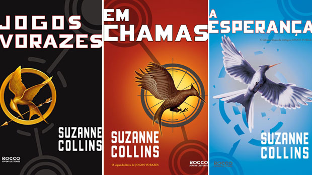
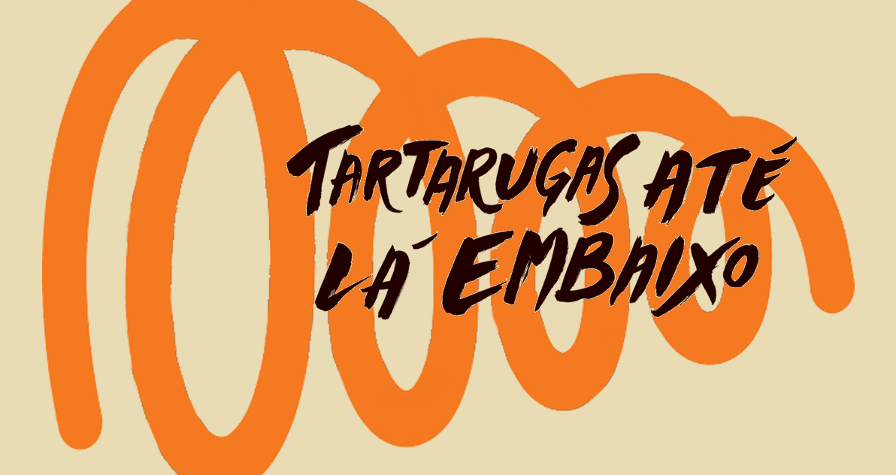

Jogos Vorazes
Mistura de ficção científica com reality show, passando pela mitologia e pela filosofia com muita ação e aventura, Jogos vorazes é o novo fenômeno da literatura jovem. Com um mote surpreendente, o livro, que está há mais de 85 semanas na lista de mais vendidos do The New York Times e de outras publicações de prestígio dos EUA, ganhou elogios de Rick Riordan, Stephenie Meyer e outros formadores de opinião e rendeu à autora Suzanne Collins lugar na badalada lista de 100 personalidades mais influentes do ano da revista Time.
Resumo:
Ambientado num futuro sombrio, Jogos vorazes é pioneiro de uma tendência que vem ganhando força no mercado de best sellers juvenis: a dos romances distópicos e pós-apocalípticos. Primeiro volume de uma trilogia, o livro narra uma luta mortal encenada por crianças e transmitida ao vivo para todos os habitantes de uma nação construída sobre as ruínas de um lugar anteriormente conhecido como América do Norte. Com sua narrativa ágil e ousada, Jogos vorazes foi traduzido para mais de 30 idiomas e vem atraindo leitores de diversas faixas etárias.
Constituída por uma suntuosa Capital cercada de 12 distritos periféricos, a nação de Panem se ergueu após a destruição dos Estados Unidos. Como represália por um levante contra a capital, a cada ano os distritos são forçados a enviar um menino e uma menina entre 12 e 18 anos para participar dos Jogos Vorazes. As regras são simples: os 24 tributos, como são chamados os jovens, são levados a uma gigantesca arena e devem lutar entre si até só restar um sobrevivente. O vitorioso, além da glória, leva grandes vantagens para o seu distrito.
Quando Katniss Everdeen, de 16 anos, decide participar dos Jogos Vorazes para poupar a irmã mais nova, causando grande comoção no país, ela sabe que essa pode ser a sua sentença de morte. Mas a jovem usa toda a sua habilidade de caça e sobrevivência ao ar livre para se manter viva. As reviravoltas do jogo e as dificuldades enfrentadas pela protagonista levam os leitores a sofrer junto com ela, enquanto descobrem um pouco sobre seu passado e seu relacionamento com Peeta Mellark, o outro tributo enviado pelo Distrito 12 para lutar nos Jogos Vorazes.
Inspirada pelo mito grego de Teseu e o Minotauro e bebendo nas melhores fontes da ficção científica, Suzanne Collins faz uma dura crítica à sociedade do espetáculo atual e prende a atenção do leitor da primeira à última página com um romance envolvente e perturbador.
Jogador Numero 1
Em 2044, a vida no planeta se tornou ainda mais difícil. Guerras constantes, os recursos naturais foram exauridos, a vida é dura para as pessoas pobres, vivendo à margem, em favelas e casas comunitárias. Assim é a vida de Wade, um adolescente que consegue computadores e outros equipamentos retirando do lixão e consertando. Desde que sua mãe morreu, foi obrigado a morar com uma tia que só o tolerava por causa do cheque que vinha todo mês.
Resumo:
A vida só é mais suportável por causa do OASIS, uma plataforma de jogos online onde as pessoas podem assumir os mais variados avatares e até estudar, como faz Wade. O OASIS foi criado por Jamie Halliday, um gênio da computação, nerd de carteirinha. Porém, Halliday faleceu, deixando um mundo atônito com um desafio deixado para qualquer pessoa que quisesse se tornar milionária: ele escondeu um ovo no OASIS. Quem o encontrar primeiro ficará com sua fortuna de 240 bilhões de dólares, mais o controle do OASIS. Começa uma corrida contra o tempo, a imprensa fica em polvorosa. Surgem especialistas em Halliday, em cultura nerd, mas depois de cinco anos a busca pelo ovo acabou virando uma piada.
Wade Watts é um dos caçadores de ovo. Garoto pobre, 17 anos, terminando a escola. O OASIS é sua forma de escapar do mundo cruel em que vive. Seus amigos, seus jogos, seus estudos, está tudo lá dentro. Como nunca tem dinheiro, não pode viajar para outros mundos dentro do OASIS. Ele passa o tempo lendo, jogando, vendo filmes, séries e ouvindo música que Halliday gostava, tudo na tentativa de encontrar o ovo.
Tartarugas Até Lá Embaixo
Depois de seis anos, milhões de livros vendidos, dois filmes de sucesso e uma legião de fãs apaixonados ao redor do mundo, John Green, autor do inesquecível A culpa é das estrelas, lança o mais pessoal de todos os seus romances: Tartarugas até lá embaixo. A história acompanha a jornada de Aza Holmes, uma menina de 16 anos que sai em busca de um bilionário misteriosamente desaparecido - quem encontrá-lo receberá uma polpuda recompensa em dinheiro - enquanto lida com o transtorno obsessivo-compulsivo (TOC). Repleto de referências da vida do autor - entre elas, a tão marcada paixão pela cultura pop e o TOC, transtorno mental que o afeta desde a infância -, Tartarugas até lá embaixo tem tudo o que fez de John Green um dos mais queridos autores contemporâneos. Um livro incrível, recheado de frases sublinháveis, que fala de amizades duradouras e reencontros inesperados, fan-fics de Star Wars e - por que não? - peculiares répteis neozelandeses.
Resumo:
Aza Holmes tem 16 anos e está o tempo todo tentando ser uma boa amiga e uma boa filha. Mas ela também precisa tentar controlar seus pensamentos, que saem do controle constantemente e a fazem se sentir mal – porque Aza tem TOC. Mesmo com acompanhamento psiquiátrico, ela não se dá muito bem com o transtorno (e não toma os remédios receitados por sua médica), e a qualquer momento pode entrar em incontroláveis espirais de pensamento sobre infecções e doenças.
Como se isso já não fosse problema suficiente, sua melhor amiga, Daisy, quer a ajuda de Aza para investigar um desaparecimento. Um bilionário da cidade está refugiado da polícia após ser acusado de suborno, e há uma recompensa de 100 mil dólares por informações sobre seu paradeiro. Coincidentemente, Aza fora amiga de infância do filho do bilionário, Davis Pickett. Em uma visita à sua mansão, as garotas descobrem que Davis não está muito interessado em localizar o próprio pai, mas quer se tornar amigo delas, em especial de Aza.
A trama segue as investigações de Aza e Daisy – que tomam um rumo um pouco inusitado –, mas principalmente os conflitos da protagonista ao lidar com o TOC. Aza conta a história em primeira pessoa, nos levando para dentro de sua cabeça e mostrando um pouco da dor que ela não consegue descrever. A todo momento, sua narração é interrompida por pensamentos incontroláveis causados pelo transtorno (marcados em itálico no texto), e que geram discussões internas na mente da protagonista. A parte mais desoladora é que o TOC sempre vence esses conflitos.